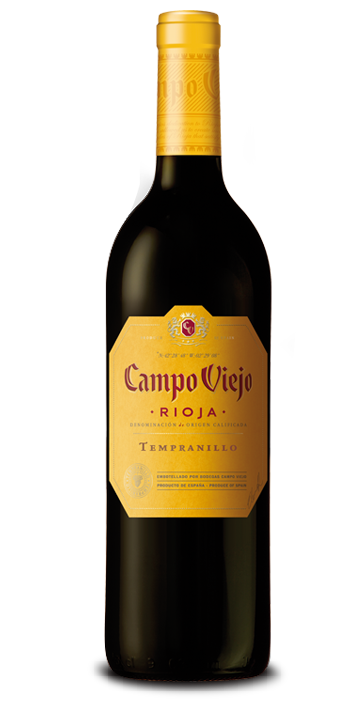

 The text of the paragraph goes here. In this example, we have an image of a headshot photo, so this text would likely be about the person whom the headshot is for.
TASTING NOTES
- Body: Medium to Full
- Acidity: Medium
- Fruit: Medium to Full
- Taste: Dark red fruits with baking spices
- Tempranillo Rules Most Riojas are a blend of several grapes, but the single most important is Tempranillo. An early-ripening variety, Tempranillo is often grown alongside blending partners Garnacha (Grenache), Mazuelo (Carignan) and Graciano, which is prized for its aromatics.
- Although there is a trend toward single-vineyard wines, most Riojas utilize grapes from three subdistricts: Rioja Alta, Rioja Alavesa and Rioja Baja. Rioja Alta, at the high, western end of the Rioja valley, produces wines renowned for their elegance and structure; Alavesa, located north of the Ebro river, is known for producing deeper-colored, more powerful wines; Baja, at the valley's southern end, offers wines that generally have a higher proportion of Garnacha for body and richness.
- Most Riojas are defined by the way they are aged. Wines labeled Crianza must be aged at least two years, one of them in barrel. Reserva wines must be aged for a minimum of three years, one of them in barrel. Gran Reserva wines must be aged at least five years, with two of them spent in barrel.